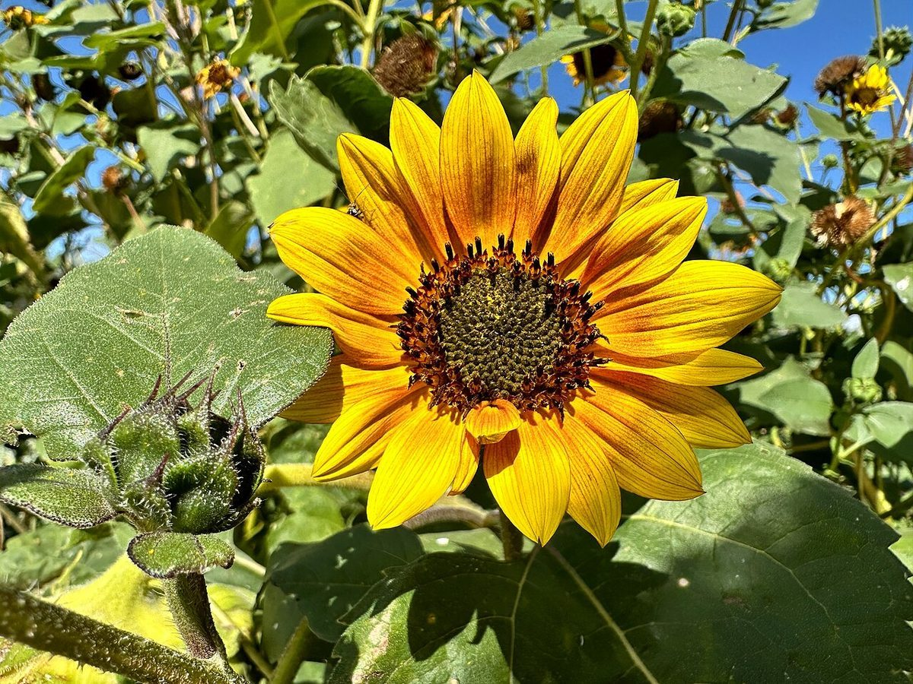

ベーカリー / 山梨県北杜市
わんぱく堂
山梨県北杜市武川町宮脇663-1にあるベーカリー「わんぱく堂」のご案内ページです。詳しいことはまだ準備中。まあだだよ、のあいだに、Instagramをのぞいてみてください。

制作側の連想
「わんぱく」から、かくれんぼ。
店名の由来は分かりません。制作側は「わんぱく」という響きから、子どもたちが駆け回る遊びを連想し、その中でも「もういいかい」「まあだだよ」「もういいよ」のかけ合いがあるかくれんぼを選びました。このサイトは、全体がそのかくれんぼになっています。お店の理念や由来とは無関係の、制作側の連想です。
まあだだよ
まだ、かくれているもの
確認できていない項目は、憶測で書かず「準備中」にしています。
- メニュー準備中
- 価格準備中
- 営業時間準備中
- 定休日準備中
- ご予約準備中
- 駐車場準備中
みーつけた(イメージ)
パンのイメージ、かくれんぼ中。
写真は北杜市や実際のお店の商品ではありません。ベーカリーという業種から選んだ、国外・撮影地不明のフリー素材です。